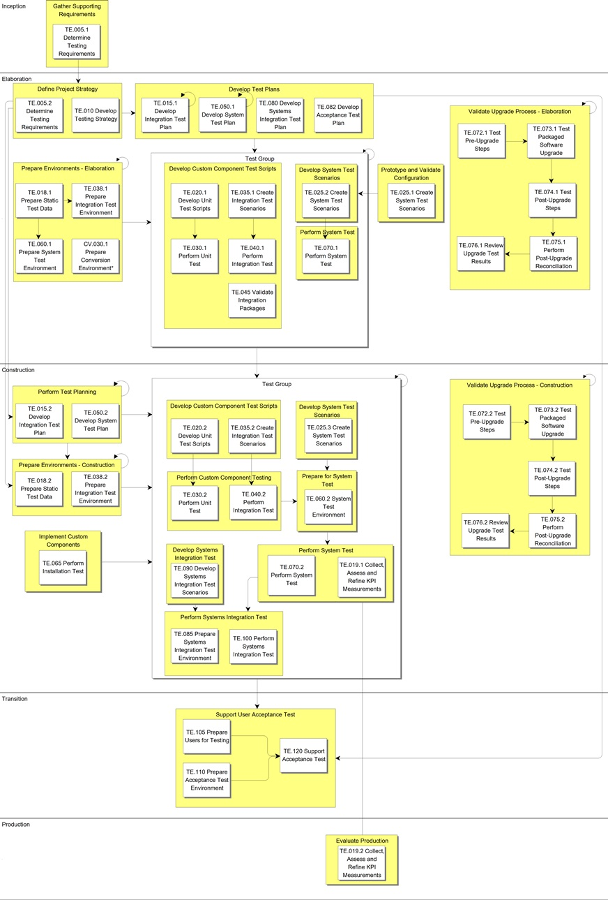

OUM |
Process Overview |
||
Method Navigation |
Current Page Navigation |
||
|
|
||||||||
The Testing process is an integrated approach to testing the quality and conformance of all elements of the new system. Therefore, it is closely related to the review tasks in the Quality Management (QM) process in the Manage focus area and to the definition and refinement of requirements in the Business Requirements process. The Testing process addresses both functional testing and testing of supplemental requirements (with the exception of performance testing as this is done in the Performance Management process, and operational testing, backup and recovery testing and disaster recovery testing as these are done in the Technical Architecture process). It also includes systems integration testing for projects with requirements for interfaces to external systems.
Testing should start as early as possible in the project, and developed components should be integrated and tested as an integrated set, as early as possible. This means that testing should start after the very first iteration in Elaboration. This allows for early discovery of errors that eventually reduces the risk of project delays that often are caused by heightened error detection at the end of the project.
Testing activities are a shared responsibility of developers, quality assurance engineers, and ambassador users, working together as an integrated project team. The Testing process presupposes that there is a highly visible user interface from which system events can be driven and results validated. The higher proportion of artifacts that are visible to the ambassador users (for example, user interfaces and reports) the more they will be able to participate in the Testing process.
 This process overview is written from the perspective of a Full Method View, utilizing ALL of the activities and tasks in this process. Therefore, all of the following sections provide comprehensive information. If your project is utilizing a tailored approach (for example, Technology Full Lifecycle View, Application Implementation View, Middleware Architecture View), not everything in this overview may be appropriate for your project. Please keep this in mind, especially when reviewing the Key Work Products and Tasks and Work Products sections. You should use OUM as a guideline for performing all types of information technology projects, but keep in mind that every project is different and that you need to adjust project activities according to each situation. Do not hesitate to add, remove, or rearrange tasks, but be sure to reflect these changes in your estimates and risk management planning. You should also consider the depth to which you address and complete each task based on the characteristics of your particular project or project increment. See Oracle's Full Lifecycle Method for Deploying Oracle-Based Business Solutions for further information on the scalability and adaptability of OUM.
This process overview is written from the perspective of a Full Method View, utilizing ALL of the activities and tasks in this process. Therefore, all of the following sections provide comprehensive information. If your project is utilizing a tailored approach (for example, Technology Full Lifecycle View, Application Implementation View, Middleware Architecture View), not everything in this overview may be appropriate for your project. Please keep this in mind, especially when reviewing the Key Work Products and Tasks and Work Products sections. You should use OUM as a guideline for performing all types of information technology projects, but keep in mind that every project is different and that you need to adjust project activities according to each situation. Do not hesitate to add, remove, or rearrange tasks, but be sure to reflect these changes in your estimates and risk management planning. You should also consider the depth to which you address and complete each task based on the characteristics of your particular project or project increment. See Oracle's Full Lifecycle Method for Deploying Oracle-Based Business Solutions for further information on the scalability and adaptability of OUM.
This process flow for this process follows:

Depending on your project (e.g., large, complex, etc.), the project manager may designate a Testing team leader and/or team leaders for various other reasons that the project manager deems necessary. If the project manager designates team leaders, they are responsible for leading their team and reviewing the work products produced by their team. The team leader plans, directs, and monitors the day-to-day work of the team. The team leader assigns work packages to the team members and makes sure they understand the requirements. The team leader is responsible for building team cohesion, motivating the teams, and providing assistance and encouragement to the team members. Each team leader performs the final quality control and quality assurance for the team by reviewing all work products. The team leader also signs off on team work completion and quality. Work that is not up to quality standards is returned. Team leaders review work products from other teams when these work products may impact aspects of the system. The team leader reports the team's progress to the project manager. Refer to Project Management in OUM for additional information on team leaders.
The intent of the Testing process is to provide a formal and effective approach to the challenge of testing. Its approach is integral to the entire development effort, and structured to build upon itself. Done well, the primary deliverable is high quality software and early delivery of a dependable system with real business benefits.
The Testing process starts off with determining the Testing Requirements (TE.005) and continues in determining the Testing Strategy (TE.010). These documents should provide the foundation for what kind of tests should be performed and how testing should be performed during the whole projects lifecycle. This also covers the acceptance criteria. The customer takes an active role in these tasks, and approves the final work products.
OUM recommends that testing is started as early as possible in the project lifecycle. Every component should be tested in a Unit Test (TE.030). A unit test is a test of a distinct unit of functionality. A unit of functionality is not directly dependent on the completion of another unit of functionality. Unit tests are the finest level of granularity in testing. Examples of units are:
The unit test is automated as much as possible and performed using the Unit Test Scripts (TE.020).
The unit test is the first test that is performed as part of the Testing process. When a unit test is completed with success, the component is integrated with other components developed during the iteration.
These components are then tested in an integration test (TE.040). In OUM, integration testing is twofold:
At the end of each iteration, you perform a system test (TE.070) to see whether all the components (and use cases) that have been developed so far work together as a whole. The integration system test is a high-level integration test that validates the integration of ALL the components that have been developed during the iteration. If you have grouped your development components into a number of smaller partitions that are iterated as separate iteration groups, you should at this point also test the integration between all the partitions that have been completed in the iteration. Again, the earlier the integration between the partitions is tested, the earlier integration issues can be discovered and dealt with. In projects where the partitions are tightly coupled (the partitions are tightly related and dependent on each other), users can perform some of this integration testing informally as part of the prototype validation tasks (RA.085 - Validate Functional Prototype) to discover possible issues even earlier. The system test is performed following the System Test Scenarios (TE.025) in the System Test Environment (TE.060).
As the system evolves through the iterations, all the testing scripts and scenarios must also evolve through the process as new or changed functionality is known and implemented. This means that you need to update the Unit Test Scripts, Integration Test Scenarios and System Test Scenarios to be consistent with what is developed. Also, in a similar way, the testing environments need to be refreshed to be consistent with the actual development.
Testing of generated and reused components is only performed at a functional level using black-box techniques, except for any components that are modified after generation or reuse.
At the end of all the iterations, you perform a final full system test (TE.070). At this point, all components should be ready and the integration between components, and partitions should be complete. This test is often more complete than the previous iterations of the system test, but this depends on the chosen approach for system testing. During the earlier iterations of the system test, you generally use a subset of the System Test Scenarios (TE.025) but for the final system test, you test them all.
Your chosen approach for your project should be documented in the Testing Strategy (TE.010).
The last test that is performed before handing the system over to the customer for the acceptance test is the systems integration test (TE.100). This test is performed only if the system integrates with other systems. During this test all the Systems Integration Test Scenarios (TE.090) are tested. The purpose of the test is to test whether all integration points work as they should, and that the business flows that cover more than a single system perform as expected. The system is in this way tested thoroughly, using both black-box and white-box techniques, before it is delivered to the customer for the acceptance test.
In a Custom BI project, after the creation and population of the Production Environment, the development team walks through business critical data and data access components.
Finally, the ambassador users validate the solution against the critical business requirements during the acceptance test, to confirm that the system is ready to go into production.
The Testing process starts off by defining the Testing Requirements (TE.005). An established, universal rule of software testing is that before you can run a test (or perform a test step), you need to know the correct outcome of that test (or test step).
In a project using a waterfall approach, the testing focus is on conformance with defined requirements. The lack of complete and detailed requirements at the start of a OUM project makes close collaboration between developers and users a necessity. Requirements are developed, documented and prioritized throughout the lifecycle of a OUM approach project. Also the testing requirements may evolve throughout the project, in particular for projects where they still are in the learning process for this type of projects.
The Testing Requirements (TE.005) specifies what type of tests should be performed, for what purpose, at what project stage they should be performed, to what level, and with what kind of output should be produced, such as the form and scope of test reports.
The testing requirements are detailed through the project. It attempts to take full advantage of all opportunities that contribute to the identification of testing requirements. For example, you identify business scenarios while developing the Business Use Case Model (RA.015), and they contribute to unit, integration, system, and systems integration testing. Your functional modeling produces testing requirements that are specific to use case testing. User interface and functional testing is performed with reference to the Functional Prototype (IM.010). The Integration Architecture Strategy (TA.030) contributes to the systems integration testing requirements. These detailed requirements are documented in the work products describing testing scenarios and sequences.
Testing is performed progressively against functional and supplemental requirements as the requirements are defined and the components are delivered. Regression testing is essential, and should be automated, wherever possible, using standard tools. A regression test is a test to uncover whether previously working software stops to work as intended.
Also, the business Domain Model (data model), the data acquisition approach, data access approach and administration approach help identify business or functional test requirements. The Technical Architecture process identifies supplemental requirements in such areas as integration, security and availability, from which you plan supplemental (non-functional) testing.
The Testing Strategy describes the actual approach that should be used for the different kind of tests that should be performed as described in the Testing Requirements. It describes the project direction as it relates to testing. It includes how testing should be performed in the various stages of the project, which tools should be used (if any), how and what metrics should be collected, how test data should be produced and what testing environments should be used in the tests. The strategy also defines the acceptance criteria of the solution.
In a project where components are developed and evolved through a number of iterations, it is important to document how the tests should be performed as part of each iteration, as the focus should differ dependent in which iteration you perform the test. A component developed in the first iteration is likely to change when feedback has been received as part of the validation, so less effort should be spent to discover all errors, but just as much as it fits the purpose for that phase in the project. The test should become more complete throughout the iterations, and at the last iteration, it should be as complete as possible.
Also, for the iteration system tests versus the final system test, you should document how much and what kind of scenarios should be tested as part of each test.
The testing approach describes the method that should be used for testing. Many existing approaches to testing do not fully utilize common testing information. Testing activities can be disassociated with each other, and you can end up reinventing material instead of reusing it. Your Testing Strategy (TE.010) should define an integrated and proportionate approach. This is described in the Testing Strategy and/or test plans.
Test planning should be started early in the project lifecycle. A test plan is a guide for how a specific test should be performed at various stages of the project. A test plan is produced iteratively along with the development iterations to ensure that the plan reflects what is actually developed in the iterations. The test plan details the approach described in the Testing Strategy, and includes information about tester roles and responsibilities, test types, test data and test estimates and scheduling. The test plan evolves from high-level test cases into more detailed test cases.
A test case is a set of conditions or variables under which a tester will determine whether an application or software system is working correctly or not. A test case could be a step in a test scenario, or a part of a test suite.
A test scenario is a test often formed as a scenario, or hypothetical story. The scenarios should be based on likely occurrences, most often built based on use case scenarios, or business processes. A scenario should include steps to execute a test from end-to-end. The test scenario may be used to test whether functional or supplemental requirements are met. Each scenario is described including the objectives for the test scenario, the setup requirements for the test, what the pre-conditions are to be able to perform the test, and the required test data on a detailed level. It includes detailed steps that are needed to execute the test, and each step contains the expected result.
A test suite is a collection of test cases that should be used to test a software program to show that it has some specified set of behaviors. A test suite often contains detailed instructions or goals for each collection of test cases and information on the system configuration to be used during testing, including the required test data on a detailed level. A group of test cases may also contain prerequisite states or steps, and descriptions of the following tests. A test suite and a test scenario are used interchangeably.
The term, test scenario is used interchangeably with test suite. If you use both terms, the difference is typically that a scenario is based upon some story or process, where a suite does not necessarily need to be based upon some story or process. Using that distinction, every test scenario is a test suite, but not every test suite is a scenario.
An executable test suite is a test scenario that can be executed by a program, typically by means of a test harness or automated test framework (such as JUnit).
A test script is a collection of test cases that should be used to test a software program to show that it has some specified set of behaviors. These steps are often executed automatically, but can just as well be executed manually.
The test sequence is the order in which something is tested.
A test item is something that should be tested. This could be indicated on various levels. As the lowest level test items (the actual implemented components) will vary during the iterations, at an early stage the test items may be indicated on a higher level for example, functional/non-functional area, application, subsystem, module.
A test type is any possible kind of test to which a test item can be subjected (functional and non-functional). Test items evolve through iterations, and therefore the test types may also evolve with the iterations. In the early iterations, the test types typically are to focus on the basics and foundations of the test item. Test criteria describe the conditions under which a test has passed or failed. This is documented for each test item and for each test that should be performed. The test criteria might vary depending on the iteration level of the test item, as in an early iteration it is likely, and acceptable, that there are more errors than there should be at the end of the last iteration.
The test plans need to be revised, as requirements are refined by the ambassador users or as the solution's design changes. The continuity of the project team is assumed in an OUM project and reduces the need for early, detailed test planning that is typical of a waterfall approach.
You start the test planning in the Elaboration phase with the development of the Integration Test Plan (TE.015). This plan contains the formal procedures for testing the Use Case Model, the Analysis Model, the Design Model and the Architectural Implementation and the updates to these models that occur during the project by testing the individual use cases as well as other identified related components together to make sure that they can be executed in a way that is consistent with what the users expect, and that the integration between those components works together as a whole, in order to detect possible problems, inconsistencies and omissions. At this level, you should be able to concentrate on testing aspects of the integration between the components rather than the individual components.
Next, you start developing the first version of the System Test Plan (TE.050) that is used for the system tests (TE.070.1) at the end of each iteration. The System Test Plan (TE.050) is updated in Construction as requirements are refined and eventually become more stable. The most updated version of the plan is used for each system test, and the final version is used for the final system test at the end of all the iterations.
The Systems Integration Test Plan (TE.080) is created at the end of the Elaboration phase, when the interface requirements and models have become relatively stable. However, this plan must also be updated if there are any changes that impact the plan.
The planning of the acceptance test is a customer task. However, you should assist the customer in the acceptance test planning (TE.082) and motivate the customer to start planning the acceptance test as early as possible. This would give a valuable feedback on what their expectations are to the final work product. You might, based on this, discover discrepancies in the understanding of parts of the system.
Designing tests is a key element of the Testing process and, in practice, contributes to defect prevention. The review of requirements during the design of a test scenario, test sequence or individual test, can often prompt a change to the component, partition or system design or even to refining those requirements.
Tests are designed in the Develop Unit Test Scripts (TE.020), Create Integration Test Scenarios (TE.035), Create System Test Scenarios (TE.025), and Create Systems Integration Test Scenarios (TE.084) tasks. In these tasks, test scripts, test case and test scenarios are created based on use case scenarios (RA.015/RA.023), use case realizations (RA.024), and supplemental requirements (RD.055/RA.024). These scripts and scenarios are developed iteratively to ensure that they evolve as the requirements evolve.
In particular, the Systems Integration Test Scenarios (TA.090) contains test scenarios that focus on the interaction between the systems. The Integration Architecture Strategy (TA.030) and the High-Level Business Process Model (RD.011) are important inputs to determine these test scenarios.
OUM emphasizes the need for early testing with real business data that usually must be converted from legacy systems or developed from new data sources (for example, catalog data). As well as supporting more effective and realistic testing, users find it easier to test a system that contains recognizable business data. You should analyze the data domains (or equivalence classes) in order to make sure that they are all covered in batch loading or during manual data entry as appropriate. Sufficient code data should be loaded into the code tables as early as possible.
Also for the prototype validations, it is recommended to use as much realistic data as possible. All test data, both for prototype validation and other testing, is produced as part of the Prepare Static Test Data (TE.018) task. However, as the requirements are changing through the process, it might be too much of an effort to produce a full set of test data during early tests. Therefore, focus on providing test data for the most stable areas first, such as reference data (code tables).
The Testing process defines the defect tracking, resolution, and regression test infrastructures required for providing dependable defect correction and trend analysis. This is based on standard tools and integrated with the Manage focus area Configuration Management (CM) process.
Integration testing is testing the integration of solution components (or test items).
As in all structured approaches to testing, the Testing process in OUM emphasizes early testing (and verification in general) at each appropriate level. Not only is it important to start early with the testing of each individual component (unit testing), but it is also important to validate the developed use cases and any other additional integration testing between those components as early as possible. Including this as an integral part of the development process allows for early discovery of integration issues, and eventually makes the solution more solid.
Components included in the project would typically fit into one of the following categories, the generated components, the reused components and the hand-coded components. All components, independent on how they are produced and unit tested, should move on to the integration test as soon as the unit test has been completed to ensure that they work properly as a whole. The unit test for the various types of components may vary.
For the generated components, adequate review of the use case design effectively prevents defects at the component level. Less unit testing is often required for these components. However, additional testing is needed in cases where the component has been modified after generation. For generated components, such modifications should be avoided, however, because of the regression testing overhead they entail.
Reused components require, at a minimum, functional testing, followed by user review and validation. A function test is designed from a business perspective and is used to ensure that the software delivers to the expectation and requirements of the business.
Hand-coded programs should be both white-box and black-box tested. Adequate review of the design prevents many defects. Involve ambassador users in the design in order to reduce the time and effort needed in testing and reworking later.
Where the component has a visible user interface (for example, a web page or operator's report), it is beneficial if the ambassador user takes part in the integration test (TE.040). However, the responsibility that a proper test is performed following the Integration Test Scenarios (TE.035), is still with the person in the role as a tester. The purpose of inviting the user to join the test, is to allow for an even earlier discovery of discrepancies in the understanding of the requirements.
Wherever possible, make effective use of standard testing tools.
To allow for continuous integration throughout the iterations, you need an Integration Testing Environment (TE.038) that contains all the most up-to-date components. This can be a challenge and makes proper configuration management a must. When a component is complete and unit tested, it should be released in the Integration Test Environment as soon as possible, so that the integration can be tested.
The integration test of the components are continuously tested as part of the task Perform Integration Test (TE.040) and Perform System Test (TE.070) tasks.
The preparation of the System Test Environment (TE.060) must be done early to make certain the customer has all the required hardware and software in place when the setup of the environment starts.
At the end of each iteration, you should perform a system test to validate the integration between all components that have been developed so far. This allows for an early discovery of integration issues.
Therefore, the system test (TE.070) can be performed as many times as there are iterations in the Elaboration and Construction phases. The last system test is performed at the end of the last iteration in the Construction phase.
The system test is performed according to the System Test Plan (TE.050), using the System Test Scenarios (TE.025). The system tests that are performed at the end of each iteration, may not be as complete as the final system test. The size of the system test may vary from testing that everything compiles correctly as a whole, to a complete test of all the System Test Scenarios. The approach you choose is often dependent on how the tests can be performed, and thereby how much effort is involved in the test. Generally, the system test is more substantial If most of the scenarios can be tested using testing tools. If most scenarios must be tested manually, the test is often less thorough as it takes too much time to complete them all. However, you should choose a number of key scenarios to test in order to discover possible key integration issues.
Adequate review of the system design prevents many defects at the system level. Involve ambassador users in the high-level design reviews in order to reduce the time and effort needed in testing and reworking later. Make as much as possible effective use of the standard testing tools. Testing should, at a minimum, cover all of the Must have and Should have requirements. Testing of Could have requirements should be given a lower priority but make sure that the implementation of any such requirements does not compromise data integrity or application stability. Having said that, code that should have been system tested, but falls out of the test because of a low priority should not be delivered for acceptance testing. Therefore, all code that should be released into acceptance testing must be properly tested.
At the system level, some testing for supplemental requirements is performed. Performance testing is performed as part of the Performance Management process.
When planning testing of supplemental requirements, refer to the Security and Control Strategy (TA.090), and the Supplemental Requirements (RD.055). Operational testing, backup and recovery testing and disaster recovery testing are performed as part of the Technical Architecture process.
Systems integration testing is performed where external systems interface to the new system. The procedures and tools involved in systems integration testing depend upon the nature of the interface, the operating environment and procedures of the external system, and the kind of solution chosen (for example, XML, messaging, flat files, transparent gateways, procedural gateways or ODBC). Special attention should be given to testing when interfacing to other databases (for example, locking situations).
Acceptance tests are typically used for end user acceptance and are often performed manually.
Performing the acceptance test is a customer task, but helping the customer to both plan and perform a proper acceptance test will decrease the risk for future problems. Assist the customer in the planning of the acceptance test (TE.082), and motivate the customer to start with this at the end of the Elaboration phase. Seeing the customers expectations while planning the acceptance test may reveal misunderstandings that then can be handled at an earlier stage.
When the test is performed by the customer, you should support the customer as part of the Support Acceptance Test (TE.120) task. The ambassador users along with other users test the system following the given priorities of the requirements. This test should be performed with full production data volumes, but in a separate Acceptance Test Environment (TE.110).
For the purpose of process improvement, test metrics should be collected. Some of these are defined in the Quality Plan and others in the Testing Strategy. Some are also used as an acceptance criteria. Typical test metrics include:
As multiple tests are performed through a number of iterations, both in the Elaboration phase, and the Construction phase, you gain experience in which aspects of the tests work well and those that may not work that well. This may depend on a number of aspects, such as, the project members experience and type of application. At the end of each iteration, plan a lessons learned workshop, involving all participants that have been involved in the test, including participants from development and configuration control.
Adjust your testing approach according to your experience, and update the test plans accordingly.
| Tool | Guidance | Application/Note |
|---|---|---|
Oracle Application Test Suite (OATS) Testing and Quality Management Tools |
This process has supplemental guidance for using using Oracle Application Test Suite (OATS) Testing and Quality Management Tools. Use the following to access the process-specific supplemental guidance. To access all Oracle Application Test Suite (OATS) Testing and Quality Management Tools supplemental information, use the OUM Testing and Quality Management Tools Supplemental Guide. |
Oracle Application Test Suite (OATS) Testing and Quality Management Tools is a complementary Oracle suite of tools that is used to manage software testing for a project as well as to develop test automation and performance testing, when used together these tools can be used to maximize system performance and ensure the quality and success of a project. |
The tasks and work products for this process are as follows:
| ID | Task | Work Product |
|---|---|---|
Inception Phase |
||
TE.005.1 |
Determine Testing Requirements | Testing Requirements |
Elaboration Phase |
||
TE.005.2 |
Determine Testing Requirements | Testing Requirements |
TE.010 |
Develop Testing Strategy | Testing Strategy |
TE.015.1 |
Develop Integration Test Plan | Integration Test Plan |
TE.018.1 |
Prepare Static Test Data | Static Test Data |
TE.020.1 |
Develop Unit Test Scripts | Unit Test Scripts |
TE.025.1 |
Create System Test Scenarios | System Test Scenarios |
TE.025.2 |
Create System Test Scenarios | System Test Scenarios |
TE.030.1 |
Perform Unit Test | Unit-Tested Components |
TE.035.1 |
Create Integration Test Scenarios | Integration Test Scenarios |
TE.038.1 |
Prepare Integration Test Environment | Integration Test Environment |
TE.040.1 |
Perform Integration Test | Integration-Tested Components |
TE.045 |
Validate Integration Packages | Validated Integrations |
TE.050.1 |
Develop System Test Plan | System Test Plan |
TE.060.1 |
Prepare System Test Environment | System Test Environment |
TE.070.1 |
Perform System Test | System-Tested Applications |
TE.072.1 |
Test Pre-Upgrade Steps | Packaged Software Upgrade Checklist |
TE.073.1 |
Test Packaged Software Upgrade | Pre-Upgrade Checklist |
TE.074.1 |
Test Post-Upgrade Steps | Post-Upgrade Checklist |
TE.075.1 |
Perform Post-Upgrade Reconciliation Testing | Reconciliation Test Report |
TE.076.1 |
Review Upgrade Test Results | Upgrade Test Analysis |
TE.080 |
Develop Systems Integration Test Plan | Systems Integration Test Plan |
TE.082 |
Develop Acceptance Test Plan | Acceptance Test Plan |
Construction Phase |
||
TE.015.2 |
Develop Integration Test Plan | Integration Test Plan |
TE.018.2 |
Prepare Static Test Data | Static Test Data |
TE.019.1 |
Collect, Assess and Refine KPI Measurements | Key Business Strategies and Objectives |
TE.020.2 |
Develop Unit Test Scripts | Unit Test Scripts |
TE.025.3 |
Create System Test Scenarios | System Test Scenarios |
TE.030.2 |
Perform Unit Test | Unit-Tested Components |
TE.035.2 |
Create Integration Test Scenarios | Integration Test Scenarios |
TE.038.2 |
Prepare Integration Test Environment | Integration Test Environment |
TE.040.2 |
Perform Integration Test | Integration-Tested Components |
TE.050.2 |
Develop System Test Plan | System Test Plan |
TE.060.2 |
Prepare System Test Environment | System Test Environment |
TE.065 |
Perform Installation Test | Tested Installation Routines |
TE.070.2 |
Perform System Test | System-Tested Applications |
TE.072.2 |
Test Pre-Upgrade Steps | Packaged Software Upgrade Checklist |
TE.073.2 |
Test Packaged Software Upgrade | Pre-Upgrade Checklist |
TE.074.2 |
Test Post-Upgrade Steps | Post-Upgrade Checklist |
TE.075.2 |
Perform Post-Upgrade Reconciliation Testing | Reconciliation Test Report |
TE.076.2 |
Review Upgrade Test Results | Upgrade Test Analysis |
TE.085 |
Prepare Systems Integration Test Environment | Systems Integration Test Environment |
TE.090 |
Develop Systems Integration Test Scenarios | Systems Integration Test Scenarios |
TE.100 |
Perform Systems Integration Test | Integration-Tested System |
Transition Phase |
||
TE.105 |
Prepare Users for Testing | Prepared Users for Testing |
TE.110 |
Prepare Acceptance Test Environment | Acceptance Test Environment |
TE.120 |
Support Acceptance Test | Acceptance Test Results |
Production Phase |
||
TE.019.2 |
Collect, Assess and Refine KPI Measurements | Key Business Strategies and Objectives |
The objectives of the Testing process are:
Refer to Key Work Products for a complete list of key work products in OUM.
The following roles are required to perform the tasks within this process:
| Role ID | Name | Responsibility |
|---|---|---|
Implementing Organization |
||
| BA | Business Analyst | Assist in creating the Unit Test Scripts. Provide input to preparation material for acceptance testing. |
| DBA | Database Administrator | Install and configure the user acceptance test database. Ensure all user acceptance testers have access to the database. |
| DD | Database Designer | Participate in determining what kind of data is required to execute the tests and participate in quality checking of the test data. |
| DV | Developer | Create Unit Test Scripts. Perform the unit test. Walk through problems from the installation test with the system administrator, and provide other required assistance. Provide support for user acceptance tests by answering questions and helping resolve potential issues. Represent the project team. |
| SAD | System Administrator | Install application software. Provide support for the testing. Perform the installation test. Install and configure hardware and operating system. Install and configure application code. Ensure that login IDs exist for the user acceptance testers. Support user acceptance tests. |
| SAN | System Analyst | Determine and document the Testing Requirements. Assist in creating the Unit Test Scripts. Oversee, review and approve the development of the System Test Scenarios. Assist in performing the unit test. Assist the customer in developing the Acceptance Test Plan. Support user acceptance testing by providing assistance about business requirements. |
| SA | System Architect | Participate in the preparation of the technical architecture environment to support testing. Support user acceptance testing by providing assistance about system architecture. |
| SA (IA) | System Architect (Information Architect) | Participate in determining what kind of information (data) is required to execute the tests. Participate in the preparation of the Information Architecture for the environment to support testing. Support user acceptance testing by providing assistance about Information Architecture. Preferably, this should be done by a system architect that specializes in Information Architecture. |
| TE | Tester | Develop Testing Strategy and Integration Test Plan. Develop the System Test Scenarios. Create the Integration Test Scenarios. Provide support for the creation of the various Testing environments and prepare Testing tools. Perform quality check of the environments. For some projects, this may be a lead tester. Develop test details and perform test. Review test details and monitor test results. Provide support for integration tests by reconciling differences between design requirements and the application and represent the project team. Develop System Test Plan. Perform the system test. Manage the system test. Answer questions and resolve potential issues. Represent the project team. Monitor test execution and results. Develop the Systems Integration Test Plan. Assist the customer in developing the Acceptance Test Plan. Develop the Systems Integration Test Scenarios. Oversee, review and approve the development of the Systems Integration Test Scenarios. Perform the systems integration test. Manage the systems integration test. Provide support for systems integration test by answering questions and helping resolve potential issues. Assist the Validation Coordinator in preparing material and the test instruction class for acceptance testing. Ensure facilities, hardware, and software are configured and installed properly. Ensure availability of facilities coordinator, system administrator, and database administrator. Ensure facilities, hardware, and software are configured and installed properly for acceptance testing. Ensure availability of facilities for acceptance testing. Review and resolve any issues that arise for acceptance testing. |
Customer (User) |
||
| KEY | Ambassador User | Participate in the determining the Testing Requirements. Assist in providing appropriate test data to execute the tests and participate in quality checking the test data. Review the System Test Scenarios to verify relevance relative to business. Participate in the various tests. Review the System Integration Test Scenarios to verify relevance relative to business. Provide input to preparation and class material for acceptance testing. |
| CDA | Customer Data Administrator | Assist in providing appropriate test data to execute the tests and participate in quality checking the test data. |
| CPM | Customer Project Manager | Ensure availability and commitment of users. Ensure availability of hardware, software and facilities. Develop sense of teamwork and ownership of the new application. Review and resolve any issues that arise from acceptance testing. |
| OS | IS Operations Staff | Set up hardware and system software configuration for the various Testing environments. Provide support for the Acceptance Test Environment. |
| SS | IS Support Staff | Provide support for the creation of the various Testing environments. Provide support for the Acceptance Test Environment. Provide support for the user acceptance tests. |
| USR | User | Read preparation material and attends test instruction class for acceptance testing. Ensure the application functions properly so that user acceptance testing can begin. Conduct user acceptance tests and log results. |
| VC | Validation Coordinator | Develop the Acceptance Test Plan. Lead the production of the preparation material, prepares and conduct the test instruction class for acceptance testing. Lead and coordinate the user acceptance test from the customer side. |
The critical success factors of this process are:

Copyright © 2006, 2016, Oracle and/or its affiliates. All rights reserved.